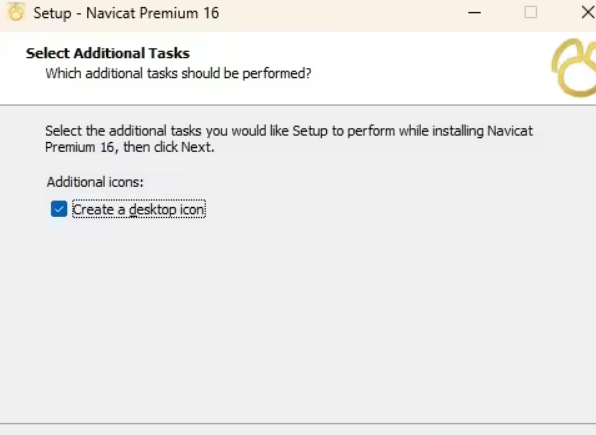
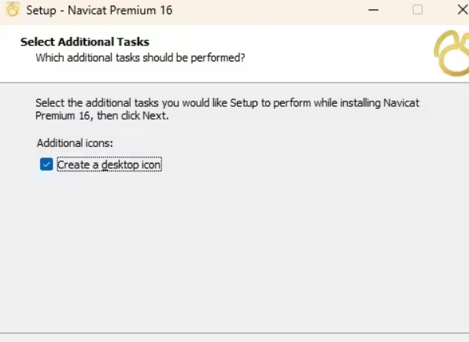
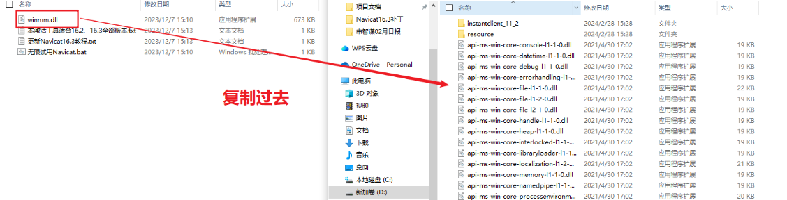
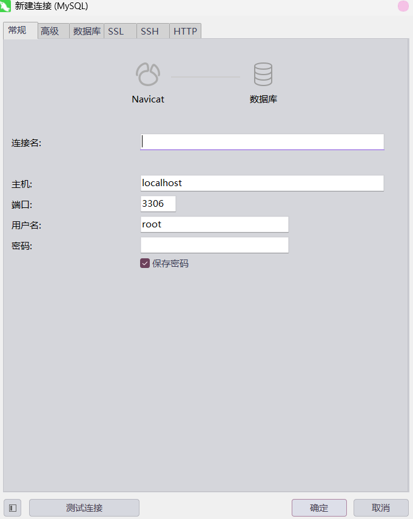
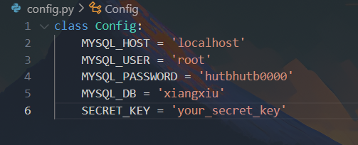

[注意]开始之前请确认你的电脑上已经安装好了python，以及vscode或者pycharm等代码编辑平台
协作部分：
1.git, sourcetree安装
下载连接：通过网盘分享的文件：网页组本地软件
提取码: hutb
链接: https://pan.baidu.com/s/15YGC9gM98TOpCWBmVwk_PA下载完成后，无脑安装即可
2.访问gitee官网，并注册账号
访问地址：https://gitee.com/
若注册未绑定邮箱，先绑定邮箱，然后将注册或绑定邮箱发送至3424255277@qq.com
3.创建本地仓库，并连接远端gitee仓库
先在本地新建文件夹，命名完成之后，打开sourcetree，点击上方加号之后选择clone

输入gitee仓库地址，点击clone，等待克隆完成
仓库url: https://gitee.com/xiang-embroidery-team/xiangxiu.git
!!!注意事项：
1）在本地仓库中对原有代码进行修改保存，进入sourcetree点击文件状态会有刚才修改的文件，选择需要上传的代码，点击暂存所选，然后点击提交，在推送前点击拉去，防止有人同时提交代码，之后点击推送即可更新代码
2）每次打开项目修改之前，先对最新代码进行拉取后再进行修改，避免冲突
本地测试：
1.mysql数据库安装配置
1）官网下载地址:https://dev.mysql.com/downloads/mysql/5.5.html#downloads
建议下载LTS版本
2）下载完成之后,将压缩包进行解压。建议大家把自己的mysql放到D盘根目录下,防止后面出现问题,自己找的时候也方便
3）环境配置
>1 打开电脑系统环境变量,在系统变量中找到Path,点击进入编辑,加上自己mysql中bin文件夹的路径,然后确定退出即可
[注意:这一步非常重要,很多人就是因为没有进行环境变量的配置, 直接在任务指示符上用'mysqld'命令进行安装,就会爆出这样的错误: 'mysqld' 不是内部或外部命令，也不是可运行的程序 或批处理文件。]
>2 安装mysql
(1)新建一个txt文档，命名为my.ini,然后打开编辑器，输入以下内容：
[mysql]
# 设置mysql客户端默认字符集
default-character-set=utf8
[mysqld]
# 设置3306端口
port = 3306
# 设置mysql的安装目录
basedir = D:\mysql-9.1.0-winx64
# 设置mysql数据库的数据的存放目录
datadir = D:\mysql-9.1.0-winx64\data
# 允许最大连接数
max_connections=20
# 服务端使用的字符集默认为8比特编码的latin1字符集
character-set-server=utf8
# 创建新表时将使用的默认存储引擎
default-storage-engine=INNODB
# 创建模式
sql_mode = NO_ENGINE_SUBSTITUTION,STRICT_TRANS_TABLES
[注意：这两个位置需要自己去设置的
# 设置mysql的安装目录
basedir = D:\mysql-9.1.0-winx64
# 设置mysql数据库的数据的存放目录
datadir = D:\mysql-9.1.0-winx64\data]
(2)用管理员身份打开cmd命令行，进入下载好mysql中bin的路径下，输入代码进行初始化mysql: mysqld --initialize
[注意:这里一定要使用管理员的身份运行,不然后面可能会出现权限不够的错误]
命令成功后(没有出现错误信息),回到自己mysql的文件中,会出现之前没有的data文件,进入data文件,里面有后缀名.err的文件,里面存放了你登入mysql的密码,双击打开,找到自己的用户和密码 一般来说root@localhost是你的初始账户,:冒号后面便是你的密码
(3)然后输入下面代码开启mysql服务: net start mysql
然后输入：mysql -u root -p 回车之后会提示输入密码.没有报错,显示你mysql的版本就是安装成功了
(4)然后进行密码的修改,使用命令：
alter user 'root'@'localhost' identified with mysql_native_password by ' **这里填写新密码** ';这里大家在''里面填入改后的密码
2.Navicat下载安装
（1）下载：通过网盘分享的文件：Navicat
提取码: hutb
链接: https://pan.baidu.com/s/15YGC9gM98TOpCWBmVwk_PA下载完成后，无脑安装即可

 

(2)关键步骤：
1.解压补丁压缩包
2.双击bat文件

3.将winmm.dll复制到安装Navicat的路径中

4.打开Navicat
如果没有提示试用，则说明成功了
5.连接数据库
新建连接，自行设置配置

6.用管理员身份打开命令窗口，输入net start mysql 启动mysql服务

7.输入mysql -u root -p，回车输入密码，进入mysql命令行

8.运行sql脚本，输入source + data.sql地址 回车提示全部OK即可

9.将项目的config,py中的数据库配置改成自己的本地数据库配置
主要是password

10.在vscode或者其他平台安装项目的依赖库
进入项目文件夹，打开cmd命令行，输入pip install -r requirements.txt 等待安装完成
或者 点击这里下载文件,下载完成后，在Python终端运行即可
11.在vscode或者其他平台运行app.py 访问http://127.0.0.1:5000/ 即可看到项目结果